PROJECT CASE STUDY
A wraparound extension designed to transform the ground floor of the home, creating a bright dining and relaxation space alongside a dedicated utility room and downstairs shower room.
The project started with the existing rear of the property and an opportunity to make much better use of the available space around the side and rear of the house.
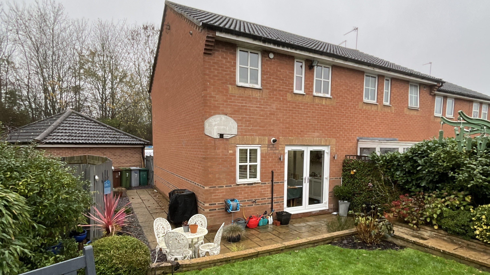
The extension was developed around both the rear and side of the property. The design required planning permission and was carefully arranged to create additional living space while also accommodating the practical rooms the homeowners wanted.
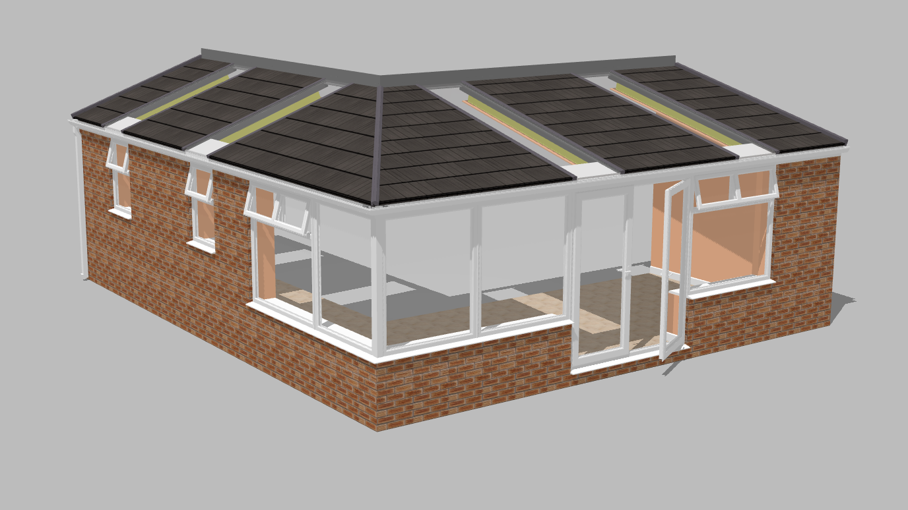
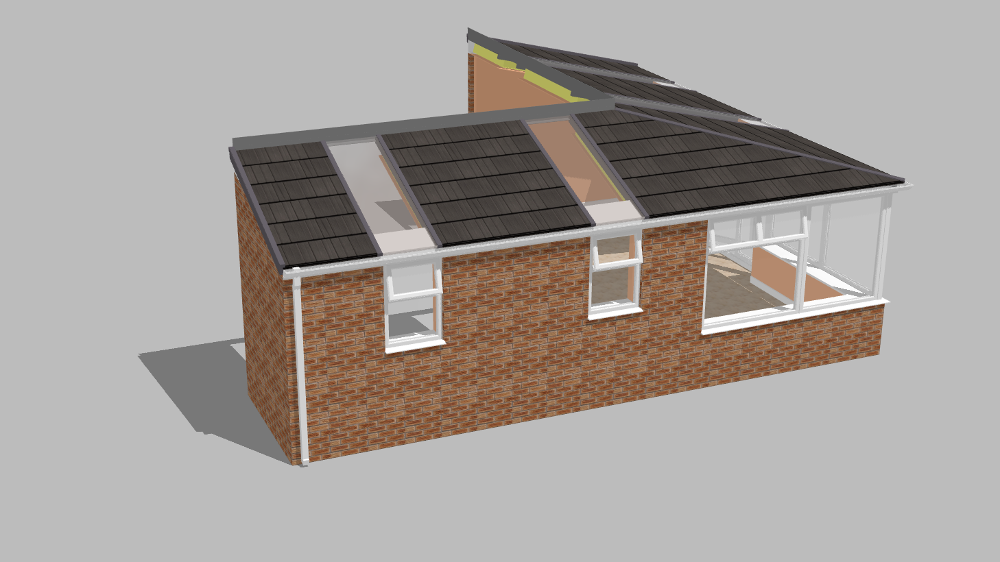
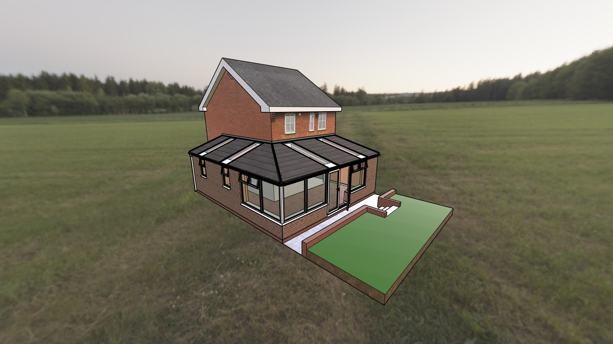
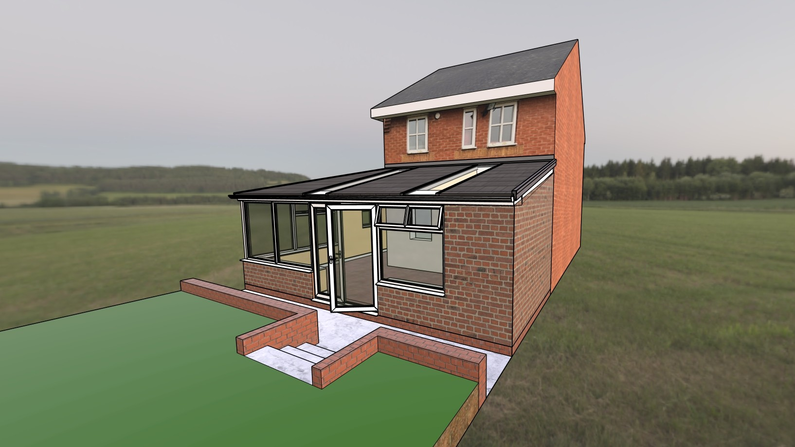
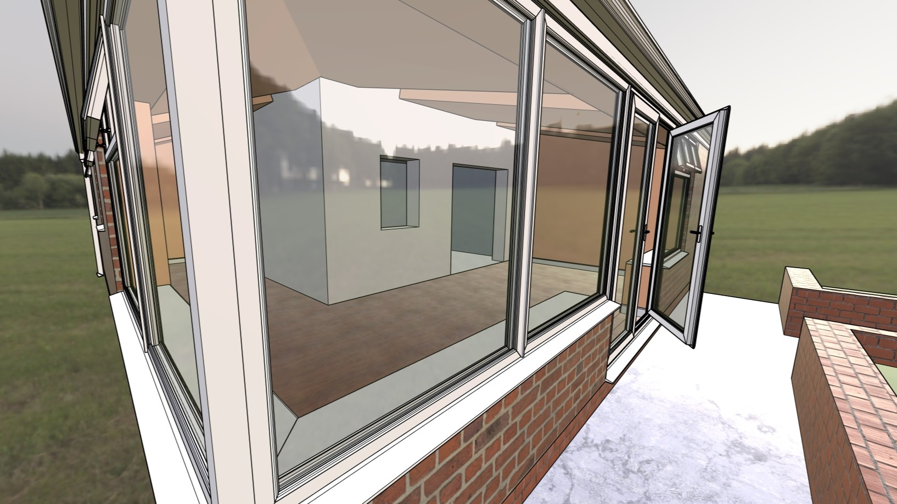
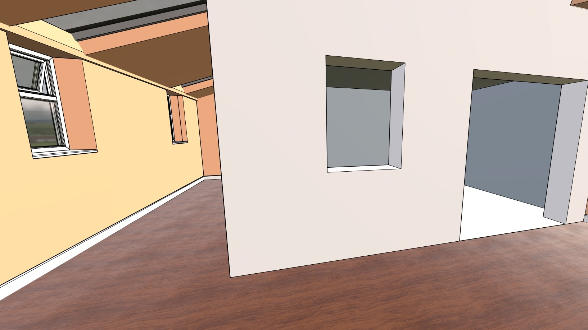
Realistic exterior visualisations helped demonstrate how the new wraparound extension would sit against the existing house and how the increased glazing would connect the new living space with the garden.
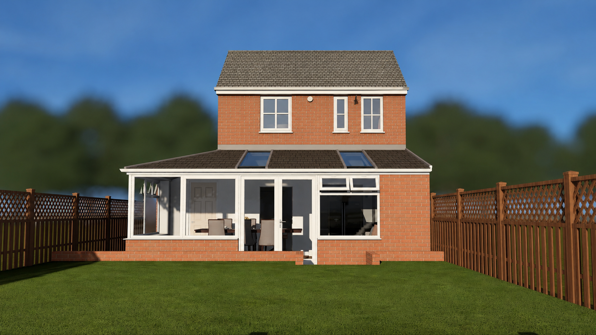
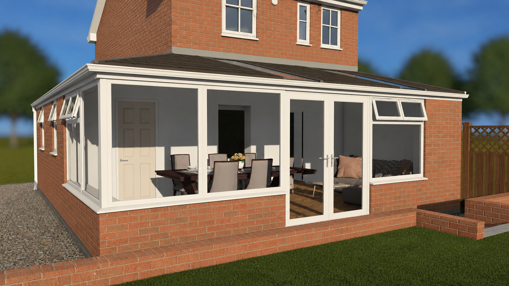
The main living area was designed as a bright and comfortable space for dining, relaxing and spending time together, with generous glazing and rooflights bringing natural light deep into the room.
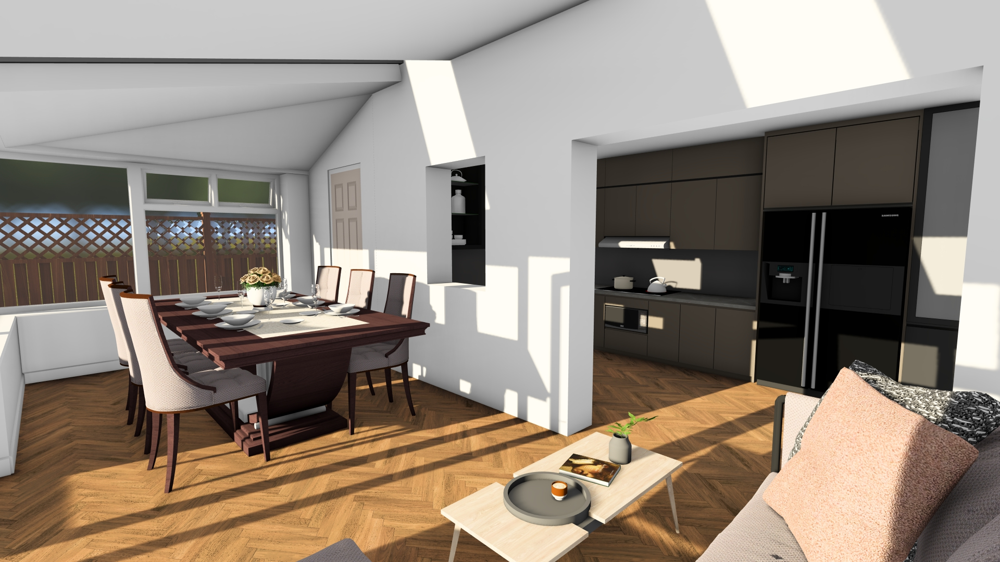
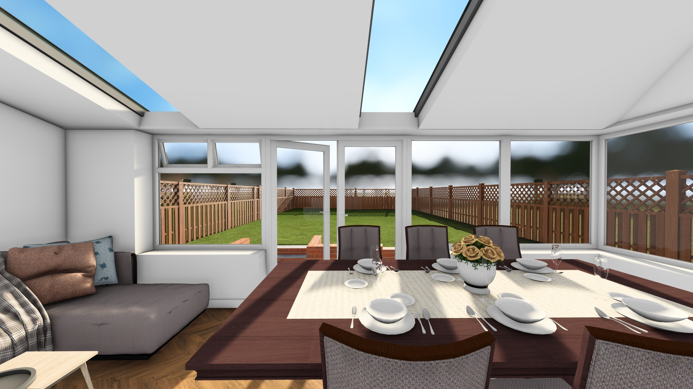
The project was not simply about creating a larger living area. The wraparound layout also provided space for a dedicated utility room and a downstairs shower room, adding practical everyday functionality to the home.
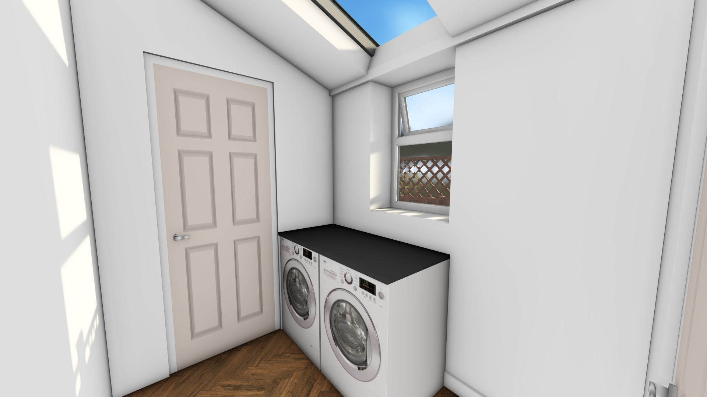
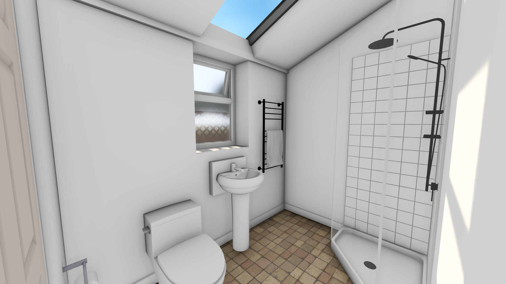
From the overall shape of an extension to the way individual rooms work together, 3D design can help you understand your project before committing to construction.
Start Your Project